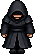

Sua escolha define sua postura.
Cauteloso, solidário ou desafiador: é você quem decide como Kali reage.
Entre lembranças fragmentadas e as regras do orfanato, Kali procura entender seu passado — e descobrir em quem pode confiar.
Tímida. Observadora. Atenta.
Fala baixo, percebe os passos no corredor e demora a baixar a guarda.
Entre livros e desenhos, Mira guarda lembranças de uma vida além dos muros. Ganhar sua confiança é descobrir o que ela ainda tem medo de contar.
Reservado. Leal. Cabisbaixo.
Suas respostas são curtas. Seu silêncio, porém, está cheio de lembranças.
Tomas, seu melhor amigo, desapareceu sem explicação. Eron guarda cartas, uma peça de tabuleiro e a esperança de terminar a partida que ficou para trás.
Comunicativo. Atento. Obediente.
Conhece os horários, explica as regras e busca a aprovação dos adultos.
Noah está no orfanato desde a chegada de Kali. Prestativo e sempre perto dos vigias, encontra segurança em saber exatamente o que esperam dele.
Brincalhão. Próximo de Eron.
Nas lembranças do amigo, fazia piadas até da sopa e dividia planos para o futuro.
Seu desaparecimento deixou uma cadeira vazia e muitas perguntas. Cartas e pequenos objetos mantêm viva a história de uma amizade que o orfanato não apagou.
Protetora. Firme em suas convicções.
Mesmo diante do perigo, procura dar ao filho coragem para pensar por si.
Daty pertence às lembranças de Kali antes do orfanato. Sua voz carrega um conselho: não deixar que outras pessoas decidam no que ele deve acreditar.
Vigilante. Protetor. Decidido.
Percebe o perigo e age para tentar manter a família a salvo.
Inauri faz parte do passado que Kali tenta reconstruir. Na memória daquela noite, fica a urgência de um pai que queria dar ao filho uma chance de escapar.
Reservados. Objetivos. Questionadores.
Observam os movimentos, conferem permissões e esperam respostas diretas.
Responsáveis pela rotina do orfanato, os vigias fazem a autoridade da Actras aparecer em cada corredor. Até uma conversa pode se transformar em uma pergunta difícil.
Firme. Controlador. Deliberado.
Fala com precisão e transforma suas ordens em pressão sobre as escolhas dos outros.
À frente dos vigias, representa o poder da Actras. Para Kali, sua presença torna ainda mais urgente uma pergunta: quem tem o direito de decidir no que alguém acredita?